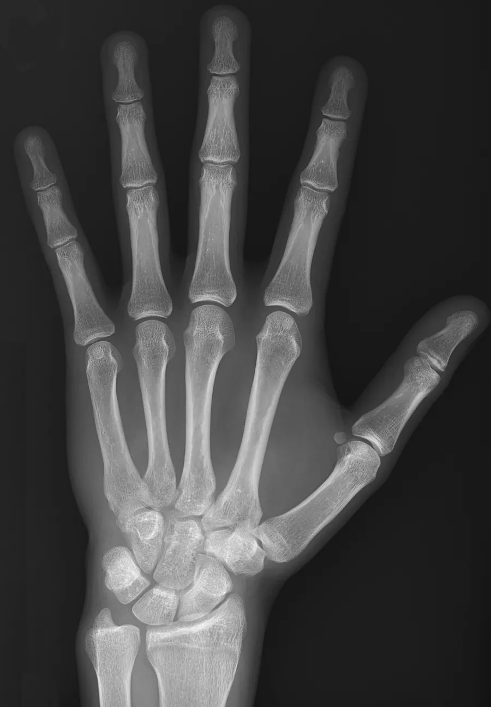

Día Internacional de la Radiología
Míralo bien. Lo llevas contigo todos los días. Bienvenido al Museo de lo Invisible.

Pasaporte del museo
Recorre la exposición, consigue los 16 sellos y llévate un premio sorpresa. Escanea el QR de cada puesto o escribe aquí su código.
Dos preguntas rápidas. Tus respuestas se quedan en este móvil.
Objetos que no deberían estar donde están, animales por dentro y cosas vistas con rayos X. Toca cada imagen para descubrir qué es.
Cada puesto tiene un dato que sorprende y un reto. Ábrelo, intenta responder y levanta la solapa para ver la solución.
Museo de lo Invisible
Lunes 9 de noviembre
De 10:30 a 13:00 en el Ágora